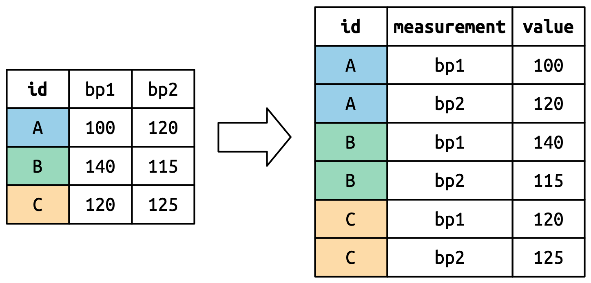
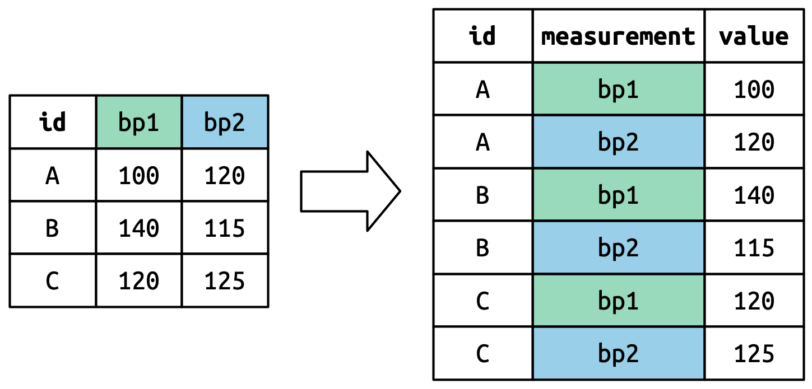
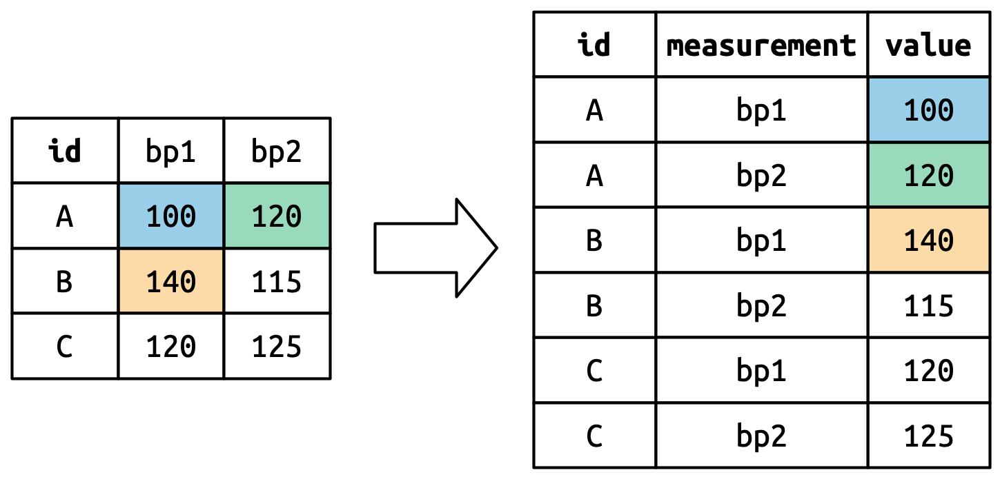
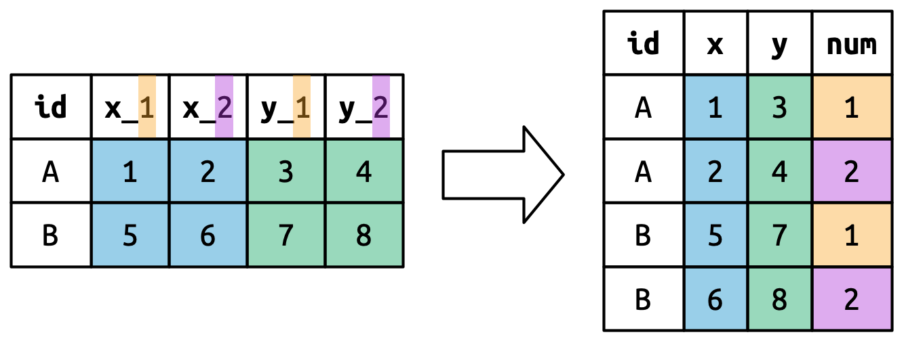

library(tidyverse)Self Practice 3: R for Data Science
5 Data tidying
5.1 Getting started
5.3 Lengthening data
The principles of tidy data might seem so obvious that you wonder if you’ll ever encounter a dataset that isn’t tidy. Unfortunately, however, most real data is untidy. There are two main reasons:
Data is often organized to facilitate some goal other than analysis. For example, it’s common for data to be structured to make data entry, not analysis, easy.
Most people aren’t familiar with the principles of tidy data, and it’s hard to derive them yourself unless you spend a lot of time working with data.
This means that most real analyses will require at least a little tidying. You’ll begin by figuring out what the underlying variables and observations are. Sometimes this is easy; other times you’ll need to consult with the people who originally generated the data. Next, you’ll pivot your data into a tidy form, with variables in the columns and observations in the rows.
tidyr provides two functions for pivoting data: pivot_longer() and pivot_wider(). We’ll first start with pivot_longer() because it’s the most common case. Let’s dive into some examples.
5.3.1 Data in column names
The billboard dataset records the billboard rank of songs in the year 2000:
billboard# A tibble: 317 × 79
artist track date.entered wk1 wk2 wk3 wk4 wk5 wk6 wk7 wk8
<chr> <chr> <date> <dbl> <dbl> <dbl> <dbl> <dbl> <dbl> <dbl> <dbl>
1 2 Pac Baby… 2000-02-26 87 82 72 77 87 94 99 NA
2 2Ge+her The … 2000-09-02 91 87 92 NA NA NA NA NA
3 3 Doors D… Kryp… 2000-04-08 81 70 68 67 66 57 54 53
4 3 Doors D… Loser 2000-10-21 76 76 72 69 67 65 55 59
5 504 Boyz Wobb… 2000-04-15 57 34 25 17 17 31 36 49
6 98^0 Give… 2000-08-19 51 39 34 26 26 19 2 2
7 A*Teens Danc… 2000-07-08 97 97 96 95 100 NA NA NA
8 Aaliyah I Do… 2000-01-29 84 62 51 41 38 35 35 38
9 Aaliyah Try … 2000-03-18 59 53 38 28 21 18 16 14
10 Adams, Yo… Open… 2000-08-26 76 76 74 69 68 67 61 58
# ℹ 307 more rows
# ℹ 68 more variables: wk9 <dbl>, wk10 <dbl>, wk11 <dbl>, wk12 <dbl>,
# wk13 <dbl>, wk14 <dbl>, wk15 <dbl>, wk16 <dbl>, wk17 <dbl>, wk18 <dbl>,
# wk19 <dbl>, wk20 <dbl>, wk21 <dbl>, wk22 <dbl>, wk23 <dbl>, wk24 <dbl>,
# wk25 <dbl>, wk26 <dbl>, wk27 <dbl>, wk28 <dbl>, wk29 <dbl>, wk30 <dbl>,
# wk31 <dbl>, wk32 <dbl>, wk33 <dbl>, wk34 <dbl>, wk35 <dbl>, wk36 <dbl>,
# wk37 <dbl>, wk38 <dbl>, wk39 <dbl>, wk40 <dbl>, wk41 <dbl>, wk42 <dbl>, …In this dataset, each observation is a song. The first three columns (artist, track and date.entered) are variables that describe the song. Then we have 76 columns (wk1-wk76) that describe the rank of the song in each week1. Here, the column names are one variable (the week) and the cell values are another (the rank).
To tidy this data, we’ll use pivot_longer():
billboard |>
pivot_longer(
cols = starts_with("wk"),
names_to = "week",
values_to = "rank"
)# A tibble: 24,092 × 5
artist track date.entered week rank
<chr> <chr> <date> <chr> <dbl>
1 2 Pac Baby Don't Cry (Keep... 2000-02-26 wk1 87
2 2 Pac Baby Don't Cry (Keep... 2000-02-26 wk2 82
3 2 Pac Baby Don't Cry (Keep... 2000-02-26 wk3 72
4 2 Pac Baby Don't Cry (Keep... 2000-02-26 wk4 77
5 2 Pac Baby Don't Cry (Keep... 2000-02-26 wk5 87
6 2 Pac Baby Don't Cry (Keep... 2000-02-26 wk6 94
7 2 Pac Baby Don't Cry (Keep... 2000-02-26 wk7 99
8 2 Pac Baby Don't Cry (Keep... 2000-02-26 wk8 NA
9 2 Pac Baby Don't Cry (Keep... 2000-02-26 wk9 NA
10 2 Pac Baby Don't Cry (Keep... 2000-02-26 wk10 NA
# ℹ 24,082 more rowsAfter the data, there are three key arguments:
colsspecifies which columns need to be pivoted, i.e. which columns aren’t variables. This argument uses the same syntax asselect()so here we could use!c(artist, track, date.entered)orstarts_with("wk").names_tonames the variable stored in the column names, we named that variableweek.values_tonames the variable stored in the cell values, we named that variablerank.
Note that in the code "week" and "rank" are quoted because those are new variables we’re creating, they don’t yet exist in the data when we run the pivot_longer() call.
Now let’s turn our attention to the resulting, longer data frame. What happens if a song is in the top 100 for less than 76 weeks? Take 2 Pac’s “Baby Don’t Cry”, for example. The above output suggests that it was only in the top 100 for 7 weeks, and all the remaining weeks are filled in with missing values. These NAs don’t really represent unknown observations; they were forced to exist by the structure of the dataset2, so we can ask pivot_longer() to get rid of them by setting values_drop_na = TRUE:
billboard |>
pivot_longer(
cols = starts_with("wk"),
names_to = "week",
values_to = "rank",
values_drop_na = TRUE
)# A tibble: 5,307 × 5
artist track date.entered week rank
<chr> <chr> <date> <chr> <dbl>
1 2 Pac Baby Don't Cry (Keep... 2000-02-26 wk1 87
2 2 Pac Baby Don't Cry (Keep... 2000-02-26 wk2 82
3 2 Pac Baby Don't Cry (Keep... 2000-02-26 wk3 72
4 2 Pac Baby Don't Cry (Keep... 2000-02-26 wk4 77
5 2 Pac Baby Don't Cry (Keep... 2000-02-26 wk5 87
6 2 Pac Baby Don't Cry (Keep... 2000-02-26 wk6 94
7 2 Pac Baby Don't Cry (Keep... 2000-02-26 wk7 99
8 2Ge+her The Hardest Part Of ... 2000-09-02 wk1 91
9 2Ge+her The Hardest Part Of ... 2000-09-02 wk2 87
10 2Ge+her The Hardest Part Of ... 2000-09-02 wk3 92
# ℹ 5,297 more rowsThe number of rows is now much lower, indicating that many rows with NAs were dropped.
You might also wonder what happens if a song is in the top 100 for more than 76 weeks? We can’t tell from this data, but you might guess that additional columns wk77, wk78, … would be added to the dataset.
This data is now tidy, but we could make future computation a bit easier by converting values of week from character strings to numbers using mutate() and readr::parse_number(). parse_number() is a handy function that will extract the first number from a string, ignoring all other text.
billboard_longer <- billboard |>
pivot_longer(
cols = starts_with("wk"),
names_to = "week",
values_to = "rank",
values_drop_na = TRUE
) |>
mutate(
week = parse_number(week)
)Now that we have all the week numbers in one variable and all the rank values in another, we’re in a good position to visualize how song ranks vary over time. The code is shown below and the result is in Figure 5.2. We can see that very few songs stay in the top 100 for more than 20 weeks.
billboard_longer |>
ggplot(aes(x = week, y = rank, group = track)) +
geom_line(alpha = 0.25) +
scale_y_reverse()
5.3.2 How does pivoting work?
Now that you’ve seen how we can use pivoting to reshape our data, let’s take a little time to gain some intuition about what pivoting does to the data. Let’s start with a very simple dataset to make it easier to see what’s happening. Suppose we have three patients with ids A, B, and C, and we take two blood pressure measurements on each patient. We’ll create the data with tribble(), a handy function for constructing small tibbles by hand:
df <- tribble(
~id, ~bp1, ~bp2,
"A", 100, 120,
"B", 140, 115,
"C", 120, 125
)We want our new dataset to have three variables: id (already exists), measurement (the column names), and value (the cell values). To achieve this, we need to pivot df longer:
df_longer <- df |>
pivot_longer(
cols = starts_with("bp"),
names_to = "measurement",
values_to = "value"
)How does the reshaping work? It’s easier to see if we think about it column by column. As shown in Figure 5.3, the values in a column that was already a variable in the original dataset (id) need to be repeated, once for each column that is pivoted.

The column names become values in a new variable, whose name is defined by names_to, as shown in Figure 5.4. They need to be repeated once for each row in the original dataset.

The cell values also become values in a new variable, with a name defined by values_to. They are unwound row by row. Figure 5.5 illustrates the process.

5.3.3 Many variables in column names
A more challenging situation occurs when you have multiple pieces of information crammed into the column names, and you would like to store these in separate new variables. For example, take the who2 dataset, the source of table1 and friends that you saw above:
who2# A tibble: 7,240 × 58
country year sp_m_014 sp_m_1524 sp_m_2534 sp_m_3544 sp_m_4554 sp_m_5564
<chr> <dbl> <dbl> <dbl> <dbl> <dbl> <dbl> <dbl>
1 Afghanistan 1980 NA NA NA NA NA NA
2 Afghanistan 1981 NA NA NA NA NA NA
3 Afghanistan 1982 NA NA NA NA NA NA
4 Afghanistan 1983 NA NA NA NA NA NA
5 Afghanistan 1984 NA NA NA NA NA NA
6 Afghanistan 1985 NA NA NA NA NA NA
7 Afghanistan 1986 NA NA NA NA NA NA
8 Afghanistan 1987 NA NA NA NA NA NA
9 Afghanistan 1988 NA NA NA NA NA NA
10 Afghanistan 1989 NA NA NA NA NA NA
# ℹ 7,230 more rows
# ℹ 50 more variables: sp_m_65 <dbl>, sp_f_014 <dbl>, sp_f_1524 <dbl>,
# sp_f_2534 <dbl>, sp_f_3544 <dbl>, sp_f_4554 <dbl>, sp_f_5564 <dbl>,
# sp_f_65 <dbl>, sn_m_014 <dbl>, sn_m_1524 <dbl>, sn_m_2534 <dbl>,
# sn_m_3544 <dbl>, sn_m_4554 <dbl>, sn_m_5564 <dbl>, sn_m_65 <dbl>,
# sn_f_014 <dbl>, sn_f_1524 <dbl>, sn_f_2534 <dbl>, sn_f_3544 <dbl>,
# sn_f_4554 <dbl>, sn_f_5564 <dbl>, sn_f_65 <dbl>, ep_m_014 <dbl>, …This dataset, collected by the World Health Organisation, records information about tuberculosis diagnoses. There are two columns that are already variables and are easy to interpret: country and year. They are followed by 56 columns like sp_m_014, ep_m_4554, and rel_m_3544. If you stare at these columns for long enough, you’ll notice there’s a pattern. Each column name is made up of three pieces separated by _. The first piece, sp/rel/ep, describes the method used for the diagnosis, the second piece, m/f is the gender (coded as a binary variable in this dataset), and the third piece, 014/1524/2534/3544/4554/5564/65 is the age range (014 represents 0-14, for example).
So in this case we have six pieces of information recorded in who2: the country and the year (already columns); the method of diagnosis, the gender category, and the age range category (contained in the other column names); and the count of patients in that category (cell values). To organize these six pieces of information in six separate columns, we use pivot_longer() with a vector of column names for names_to and instructors for splitting the original variable names into pieces for names_sep as well as a column name for values_to:
who2 |>
pivot_longer(
cols = !(country:year),
names_to = c("diagnosis", "gender", "age"),
names_sep = "_",
values_to = "count",
values_drop_na = TRUE
)# A tibble: 76,046 × 6
country year diagnosis gender age count
<chr> <dbl> <chr> <chr> <chr> <dbl>
1 Afghanistan 1997 sp m 014 0
2 Afghanistan 1997 sp m 1524 10
3 Afghanistan 1997 sp m 2534 6
4 Afghanistan 1997 sp m 3544 3
5 Afghanistan 1997 sp m 4554 5
6 Afghanistan 1997 sp m 5564 2
7 Afghanistan 1997 sp m 65 0
8 Afghanistan 1997 sp f 014 5
9 Afghanistan 1997 sp f 1524 38
10 Afghanistan 1997 sp f 2534 36
# ℹ 76,036 more rows5.3.4 Data and variable names in the column headers
The next step up in complexity is when the column names include a mix of variable values and variable names. For example, take the household dataset:
household# A tibble: 5 × 5
family dob_child1 dob_child2 name_child1 name_child2
<int> <date> <date> <chr> <chr>
1 1 1998-11-26 2000-01-29 Susan Jose
2 2 1996-06-22 NA Mark <NA>
3 3 2002-07-11 2004-04-05 Sam Seth
4 4 2004-10-10 2009-08-27 Craig Khai
5 5 2000-12-05 2005-02-28 Parker Gracie This dataset contains data about five families, with the names and dates of birth of up to two children. The new challenge in this dataset is that the column names contain the names of two variables (dob, name) and the values of another (child, with values 1 or 2). To solve this problem we again need to supply a vector to names_to but this time we use the special ".value" sentinel; this isn’t the name of a variable but a unique value that tells pivot_longer() to do something different. This overrides the usual values_to argument to use the first component of the pivoted column name as a variable name in the output.
household |>
pivot_longer(
cols = !family,
names_to = c(".value", "child"),
names_sep = "_",
values_drop_na = TRUE
)# A tibble: 9 × 4
family child dob name
<int> <chr> <date> <chr>
1 1 child1 1998-11-26 Susan
2 1 child2 2000-01-29 Jose
3 2 child1 1996-06-22 Mark
4 3 child1 2002-07-11 Sam
5 3 child2 2004-04-05 Seth
6 4 child1 2004-10-10 Craig
7 4 child2 2009-08-27 Khai
8 5 child1 2000-12-05 Parker
9 5 child2 2005-02-28 GracieWe again use values_drop_na = TRUE, since the shape of the input forces the creation of explicit missing variables (e.g., for families with only one child).
Figure 5.7 illustrates the basic idea with a simpler example. When you use ".value" in names_to, the column names in the input contribute to both values and variable names in the output.

5.4 Widening data
So far we’ve used pivot_longer() to solve the common class of problems where values have ended up in column names. Next we’ll pivot (HA HA) to pivot_wider(), which makes datasets wider by increasing columns and reducing rows and helps when one observation is spread across multiple rows. This seems to arise less commonly in the wild, but it does seem to crop up a lot when dealing with governmental data.
We’ll start by looking at cms_patient_experience, a dataset from the Centers of Medicare and Medicaid services that collects data about patient experiences:
cms_patient_experience# A tibble: 500 × 5
org_pac_id org_nm measure_cd measure_title prf_rate
<chr> <chr> <chr> <chr> <dbl>
1 0446157747 USC CARE MEDICAL GROUP INC CAHPS_GRP… CAHPS for MI… 63
2 0446157747 USC CARE MEDICAL GROUP INC CAHPS_GRP… CAHPS for MI… 87
3 0446157747 USC CARE MEDICAL GROUP INC CAHPS_GRP… CAHPS for MI… 86
4 0446157747 USC CARE MEDICAL GROUP INC CAHPS_GRP… CAHPS for MI… 57
5 0446157747 USC CARE MEDICAL GROUP INC CAHPS_GRP… CAHPS for MI… 85
6 0446157747 USC CARE MEDICAL GROUP INC CAHPS_GRP… CAHPS for MI… 24
7 0446162697 ASSOCIATION OF UNIVERSITY PHYSI… CAHPS_GRP… CAHPS for MI… 59
8 0446162697 ASSOCIATION OF UNIVERSITY PHYSI… CAHPS_GRP… CAHPS for MI… 85
9 0446162697 ASSOCIATION OF UNIVERSITY PHYSI… CAHPS_GRP… CAHPS for MI… 83
10 0446162697 ASSOCIATION OF UNIVERSITY PHYSI… CAHPS_GRP… CAHPS for MI… 63
# ℹ 490 more rowscms_patient_experience |>
distinct(measure_cd, measure_title)# A tibble: 6 × 2
measure_cd measure_title
<chr> <chr>
1 CAHPS_GRP_1 CAHPS for MIPS SSM: Getting Timely Care, Appointments, and Infor…
2 CAHPS_GRP_2 CAHPS for MIPS SSM: How Well Providers Communicate
3 CAHPS_GRP_3 CAHPS for MIPS SSM: Patient's Rating of Provider
4 CAHPS_GRP_5 CAHPS for MIPS SSM: Health Promotion and Education
5 CAHPS_GRP_8 CAHPS for MIPS SSM: Courteous and Helpful Office Staff
6 CAHPS_GRP_12 CAHPS for MIPS SSM: Stewardship of Patient Resources Neither of these columns will make particularly great variable names: measure_cd doesn’t hint at the meaning of the variable and measure_title is a long sentence containing spaces. We’ll use measure_cd as the source for our new column names for now, but in a real analysis you might want to create your own variable names that are both short and meaningful.
pivot_wider() has the opposite interface to pivot_longer(): instead of choosing new column names, we need to provide the existing columns that define the values (values_from) and the column name (names_from):
cms_patient_experience |>
pivot_wider(
names_from = measure_cd,
values_from = prf_rate
)# A tibble: 500 × 9
org_pac_id org_nm measure_title CAHPS_GRP_1 CAHPS_GRP_2 CAHPS_GRP_3
<chr> <chr> <chr> <dbl> <dbl> <dbl>
1 0446157747 USC CARE MEDICA… CAHPS for MI… 63 NA NA
2 0446157747 USC CARE MEDICA… CAHPS for MI… NA 87 NA
3 0446157747 USC CARE MEDICA… CAHPS for MI… NA NA 86
4 0446157747 USC CARE MEDICA… CAHPS for MI… NA NA NA
5 0446157747 USC CARE MEDICA… CAHPS for MI… NA NA NA
6 0446157747 USC CARE MEDICA… CAHPS for MI… NA NA NA
7 0446162697 ASSOCIATION OF … CAHPS for MI… 59 NA NA
8 0446162697 ASSOCIATION OF … CAHPS for MI… NA 85 NA
9 0446162697 ASSOCIATION OF … CAHPS for MI… NA NA 83
10 0446162697 ASSOCIATION OF … CAHPS for MI… NA NA NA
# ℹ 490 more rows
# ℹ 3 more variables: CAHPS_GRP_5 <dbl>, CAHPS_GRP_8 <dbl>, CAHPS_GRP_12 <dbl>The output doesn’t look quite right; we still seem to have multiple rows for each organization. That’s because, we also need to tell pivot_wider() which column or columns have values that uniquely identify each row; in this case those are the variables starting with "org":
cms_patient_experience |>
pivot_wider(
id_cols = starts_with("org"),
names_from = measure_cd,
values_from = prf_rate
)# A tibble: 95 × 8
org_pac_id org_nm CAHPS_GRP_1 CAHPS_GRP_2 CAHPS_GRP_3 CAHPS_GRP_5 CAHPS_GRP_8
<chr> <chr> <dbl> <dbl> <dbl> <dbl> <dbl>
1 0446157747 USC C… 63 87 86 57 85
2 0446162697 ASSOC… 59 85 83 63 88
3 0547164295 BEAVE… 49 NA 75 44 73
4 0749333730 CAPE … 67 84 85 65 82
5 0840104360 ALLIA… 66 87 87 64 87
6 0840109864 REX H… 73 87 84 67 91
7 0840513552 SCL H… 58 83 76 58 78
8 0941545784 GRITM… 46 86 81 54 NA
9 1052612785 COMMU… 65 84 80 58 87
10 1254237779 OUR L… 61 NA NA 65 NA
# ℹ 85 more rows
# ℹ 1 more variable: CAHPS_GRP_12 <dbl>5.4.1 How does pivot_wider() work?
To understand how pivot_wider() works, let’s again start with a very simple dataset. This time we have two patients with ids A and B, we have three blood pressure measurements on patient A and two on patient B:
df <- tribble(
~id, ~measurement, ~value,
"A", "bp1", 100,
"B", "bp1", 140,
"B", "bp2", 115,
"A", "bp2", 120,
"A", "bp3", 105
)We’ll take the values from the value column and the names from the measurement column:
df |>
pivot_wider(
names_from = measurement,
values_from = value
)# A tibble: 2 × 4
id bp1 bp2 bp3
<chr> <dbl> <dbl> <dbl>
1 A 100 120 105
2 B 140 115 NATo begin the process pivot_wider() needs to first figure out what will go in the rows and columns. The new column names will be the unique values of measurement.
df |>
distinct(measurement) |>
pull()[1] "bp1" "bp2" "bp3"